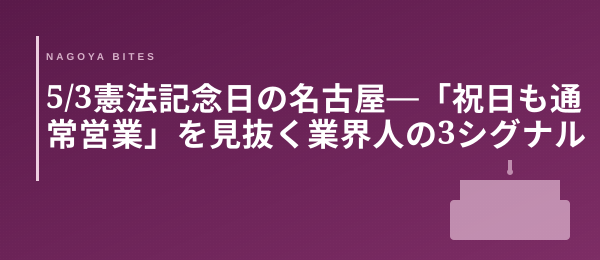

季節短信
5/3憲法記念日の名古屋 — 「祝日も通常営業」を見抜く3シグナル
5/3日曜・憲法記念日。名古屋の繁華街は祝日特有の歪んだ需要に揺れている。家族連れランチで早仕舞いする店もあれば、通常営業を貫く店もある。業界人が「祝日も動いている店」を見抜く3つのシグナル — 立地・SNS・電話を、3分で使える形に整理した。

この記事はNAGOYA BITES — 名古屋の厳選1,100店超を業界視点で紹介するグルメガイドの一部です。
関連特集: 誕生日・記念日10選 →
GW後半初日、5/3日曜・憲法記念日。名古屋の繁華街は祝日特有の歪んだ需要に晒されている。家族連れがランチ帯を埋め、夕方に早仕舞いする店も多い。一方で、業界人は同じ祝日でも「今夜は通常営業の店」を即座に当てる。判断軸は3つだ。
① 立地 × 業態 — 祝日休業率の見抜き方
栄・伏見のオフィス街中心の店は祝日休業率が高いが、錦三・住吉町の歓楽街エリアは祝日も通常営業の率が高い。雇用ベースのキッチンが回っているからだ。逆に住宅街の家族経営小箱はGW中休が多い。客単価4,000円前後の小箱は休業率が上がり、6,000円以上のコース型は仕込みコストの関係で通常営業を選ぶ傾向がある。立地と業態の組み合わせで、営業率は3分でざっくり推定できる。
② SNS更新の頻度 — 4月最終週の沈黙は休業サイン
GW直前1週間にInstagramの更新を続けている店は「連休中も動いている」サイン。逆に4月20日以降で投稿が止まっている店は休業の可能性が高い。ストーリーズの日次更新まで途切れているなら、ほぼ確定で休みと見ていい。逆に5/1〜5/2に投稿があれば、5/3も通常営業の確度が一気に上がる。
③ 電話の通じやすさ — 17時前の即出は仕込みのリズム
17時前に電話して即出る店は、仕込みのリズムが止まっていない＝今夜営業の確度が高い。逆に折り返しがない・留守電のままの店は、GW明けまで様子見でいい。電話一本3分で判定できる、いちばん確実なシグナルだ。
5/3夜の名古屋は、立地×SNS×電話の3シグナルで30分以内に「今夜入れる店」が浮かぶ。連休中盤でも、業界人は「祝日も動いている店」を諦めない。
Inside Perspective — 業界人の目利き
- 栄・伏見のオフィス街型は祝日休業が多く、錦三・住吉町の歓楽街型は通常営業が多い — 立地で営業率は7割推定できる
- Instagramが4月最終週で更新停止 → ほぼ確定で休業。逆に5/1〜5/2に投稿があれば5/3も動いている確度が高い
- 17時前の電話で即出るかどうかが最終判定 — 仕込みのリズムが続いている店は今夜の営業確度が一気に上がる